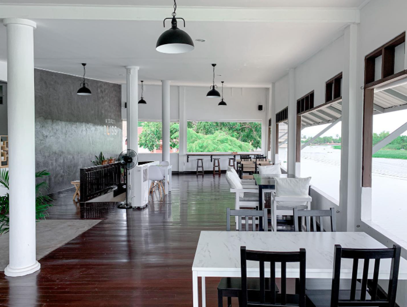
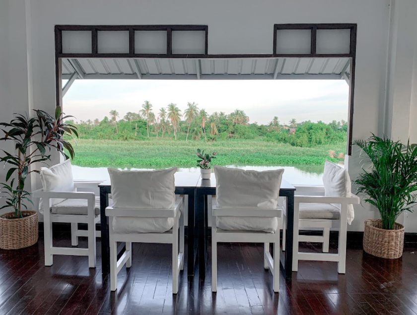
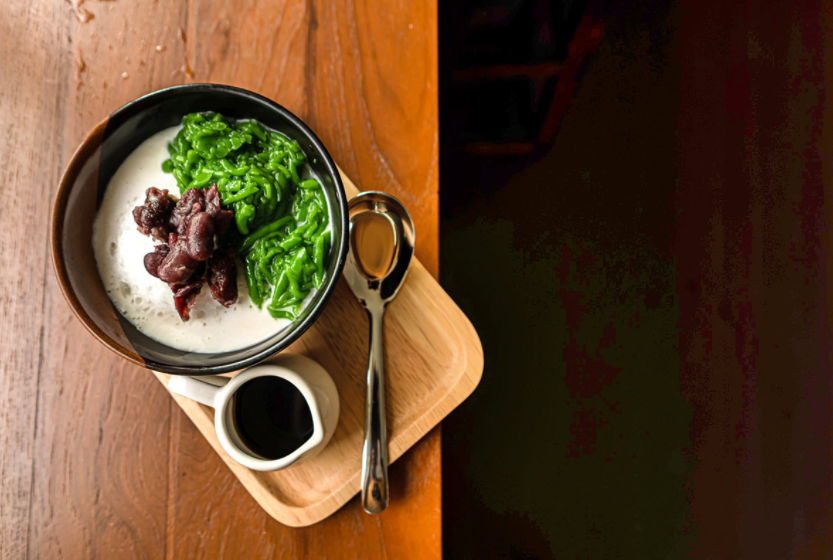
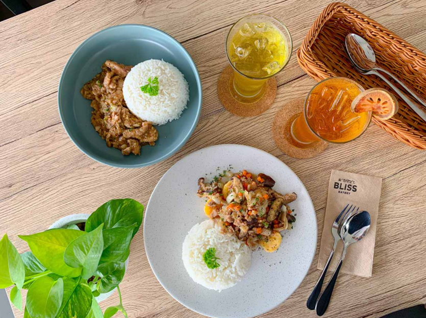
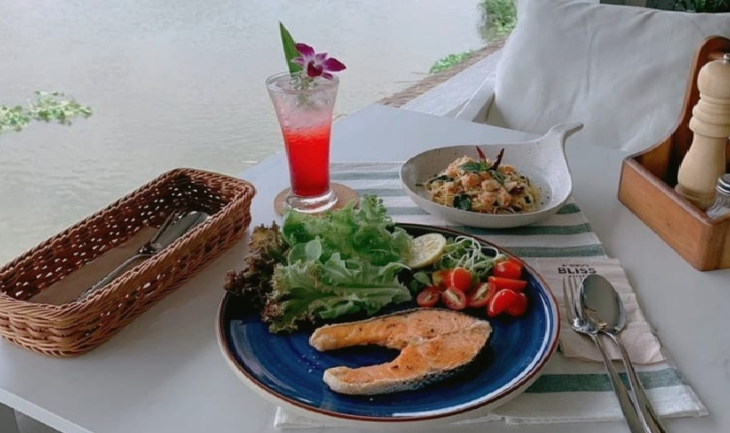

<div class="container" fxLayout="column" fxFlex>
    <mat-card fxFlex fxLayout="column">
        <mat-toolbar color="primary" style="height: 100px;">
            <span class="text-page"><strong>Bliss Eatery</strong></span>
        </mat-toolbar>
        <div fxLayout="row" fxLayoutAlign="center center" fxFlex>
            <div fxFlex="50" fxLayout="column">
                <mat-card fxLayoutAlign="center center"></mat-card>
            </div>
            <div fxLayout="column" fxFlex="50">
                <div fxFlex="25" fxLayout="row">
                    <mat-card></mat-card>
                    <mat-card></mat-card>
                </div>
                <div fxFlex="25" fxLayout="row">
                    <mat-card></mat-card>
                    <mat-card></mat-card>
                </div>
            </div>
        </div>
        <div fxLayout="column" fxFlex="50">
            <mat-card>
                <div fxLayout="column">
                    <mat-toolbar color="primary">
                        <span><strong>รายละเอียดเกี่ยวกับค่าเฟ่</strong></span>
                    </mat-toolbar>
                    <div>
                        <p><strong class="detail-Pros">จุดเด่น</strong></p>
                        <p>
                            Bliss Eatery คาเฟ่วิวสวยติดริมแม่น้ำ
                            เมื่อเดินเข้าไปแล้วเราจะได้สัมผัสกับบรรยากาศที่เป็นธรรชาติมากๆ
                            เพราะการตกแต่งของทางร้านตกแต่งด้วยเฟอร์นิเจอร์สีขาวสบายตาและต้นไม้นานาชนิดทำให้ดูกลมกลืนกับธรรมชาติโดยรอบแบบสุดๆ
                            โซนที่นั่งก็จะติดกับริมแม่น้ำสามารถมองเห็นทั้งวิวแม่น้ำและวิวท้องทุ่งนาของชาวบ้านได้ด้วยค่ะ
                            สำหรับเมนูอาหาของที่นี่มีทั้งเมนูอาหารคาวและเมนูอาหารหวาน
                            ส่วนเมนูที่เป็นซิกเนเจอร์ประจำร้านเลยก็คือลอดช่อง ปีนังและสปาเก็ตตี้ฉู่ฉี่กุ้ง
                            หากใครที่มาเที่ยวนครปฐมและอยากสูดกลิ่นอายธรรมชาติต้องห้ามพลาดร้านนี้เลยค่ะ
                        </p>
                    </div>
                    <div>
                        <p><strong class="detail-Pros">วันเวลา เปิด-ปิด</strong></p>
                        <p>
                            วันศุกร์-อาทิตย์ 10.00-18.00 น.
                        </p>
                    </div>
                    <div>
                        <p><strong class="detail-Pros">เบอร์โทรติดต่อ</strong></p>
                        <p>
                            097-1541935 
                        </p>
                    </div>
                    <div>
                        <p><strong class="detail-Pros">Map Location</strong></p>
                        <button mat-raised-button color="accent" (click)="openMap()">Open Google Map</button>
                    </div>
                </div>
            </mat-card>
        </div>
    </mat-card>
</div>